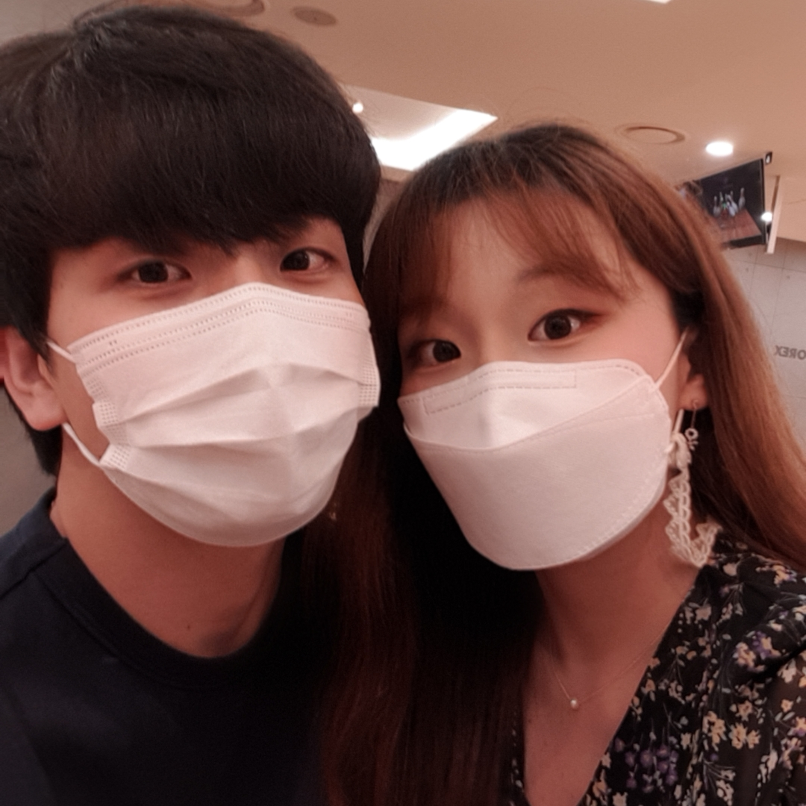

단락나누기!!! 왜냐면 태그는 정보로써 더 가치있게 하기 때문!
br태크는 그냥 그냥이야 편해 근데 그래
css기술은. 무엇은가. css에서 태그와 태그 사이 여백을 나타내는것
코드에 폰트 적용 아마추어같은 것을 쓰면 인지를 못하고
원래 글을 쓰고 그뒤에 css를 입히면 그만
사진을 넣고 싶다!.

짜쟌 쉽습니다. 예쁜 여자친구와 같이 찍은 사진을 올렸습니다!
부모자식 관계가 바뀐다. ㅇㅅㅇ??
문법을 정리-> 구조
빈도수가 앞도적으로 높은것들의 설명
태그가 웹의 왕국이라면 이것은 제왕이다. 바로바로 이것은 앵커다 닻
그냥 링크 표현임다.
<
앵커 한강뷰 가즈아
이것은 탭열림 링크를 타고 돌아다닌다.=공부, 그 과정이 즐겁다면. 넌 최고야
링크는 본드, 실이다. 모여서 책을 엮어 낸다.->website
내가만든 웹 페이지를 인터넷을 통해서 배포. 인터넷은 무엇인가?? 방향은?
웹의 역사. 시간이 지나가면서 복잡했다.
어떻게 공유하는가 이 내가 잘 만든 이건.
웹브라우저랑, 웹서버 개발됨.
웹브라우저가 서버에 신호를 보면 서버가 하드디스크에서 파일을 찾아 쏴준다.
브라우저-요청 서버-응답
클라이언트-요청 서버-응답
서버는 낯설다. 폰노이만의 대답. 수학은 이해가 아니라 익숙해 지는것
<
그렇다 잘하기 위해선 천재가 되어야하는 게 아니라 익숙해 지자.
웹 호스팅이 간편하다. 빌리는 것. 호스티으로 체험해보고 웹서버를 운영하여 익숙해 지자
깃허브 무료이며 호스팅 어쩌구. 수 많은 오픈소스가 만들어진다.
웹서버 운영. 아이피주소 vs 파일주소
http웹페이지 통신 vs 파일직접열기
배움의 진도가 갈수록 중요도는 떨어지지만, 난이도는 높아진다.
나는. 부업적으로 코딩을 배운다. 아니 마음만은 주업이다.
공부만하고 공부한 것을 사용하지 않으면 무엇이 쓸모 있냐. 머리만 복잡해진다.
기본적인 명사 그다음 동사를 조합하다보면 수많은 경우의 수의 지식을 만든다.
나에게서 나오는 불만족, 필요함을 메모하고 실행하자. 절망하자.
최고로 빠른 성장을 이룬다
※최소한으로 배워서 최대한으로 사용하자
나의 진로.
웹을 아름답게 CSS
사용자와 상호작용 Javascript
백엔드 기술 JSP
광고수입 WEB2 광고수업
내가 무엇을 알고 있는지 !
그리고 우선 시작을 하자 내가 무엇을 필요로 하는지 멘토도 없으며
섵 불리 물어보기에도 애매하다. 이구간은 내가 혼자 개척 해 나가는 것이다
자자 동영상도 올릴 수 있데
그만큼 신난시다는 거지
댓글 기능 구현도 필요. 하지만 스펨 차단기능등 고도의 기술이 필요하며
소통이 필요한 만큼 글만 가능한지 이미지도 가능한지.
하지만 남들이 만든 기능을 내가 포함시키면 그만이지 이게 코딩이다 그거다..
하지만 여기서 중요한거 그그 이건 파일이기 때문에 웹을 통해 댓글 구현을 해야한다.
그에 따른 설정도 해야함